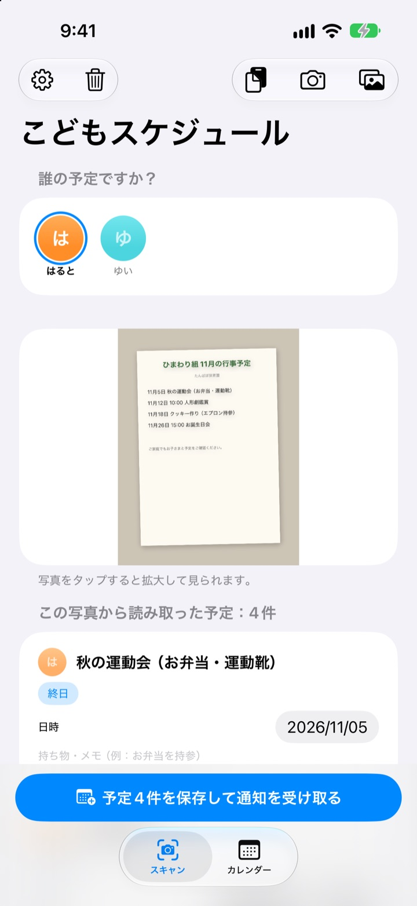
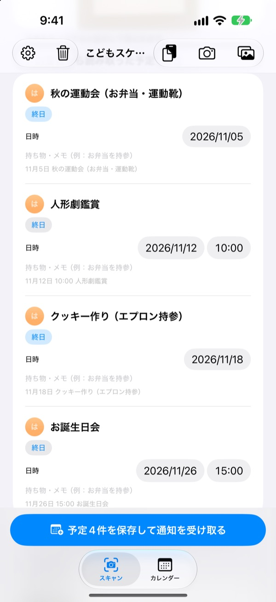
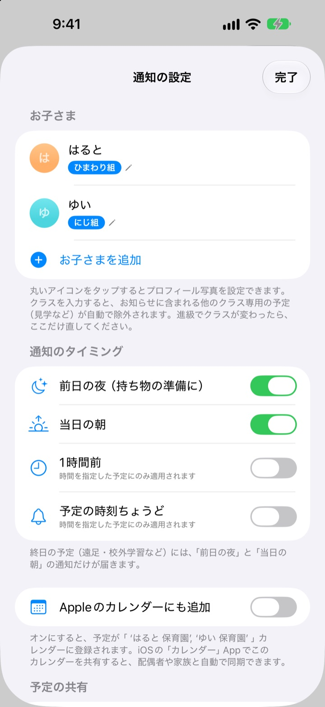
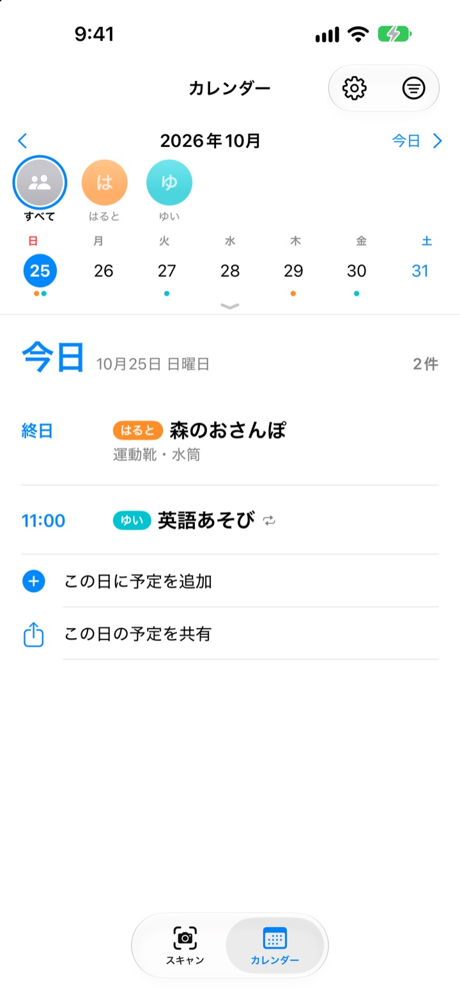

おたよりは撮るだけ。
持ち物は前日に通知
園からもらった月間予定表を撮ると、日付・時間・行事名を読み取ってまとめてカレンダーに入れます。遠足の前の晩8時には「お弁当を忘れずに」と通知が届きます。
すべての機能が無料です。写真が端末の外に出ることはありません。

おたよりを撮ってみましょう
来月の行事のお知らせの見本です。撮影すると、アプリと同じように予定と持ち物を取り出し、選んだタイミングで通知を予約します。
おたよりの予定、手帳に書き写していませんか？
行事は月に5つも6つも。そのたびにお弁当、体操服、エプロンと持ち物も変わります。冷蔵庫に貼った予定表は通勤中には見られず、思い出すのはいつも当日の朝。こどもスケジュールは、その紙1枚をカレンダーと通知に変えます。
写真1枚で1か月分
月間カレンダー、おたより、単発のお知らせ、どんな形でも撮るかアルバムから選ぶだけで、日付・時間・行事名を読み取ります。園からのメッセージを貼り付けてもOK。「明日」「今週の金曜日」といった言葉も日付に直します。
保存する前にタイトル・日付・持ち物メモをその場で直せて、いらない予定はスワイプで消せます。クラス名を入れておけば、ほかのクラスだけの予定は自動で外します。

持ち物は前日の夜にお知らせ
通知は前日の夜8時、当日の朝7時30分、1時間前、ちょうどの時刻から選べます。持ち物メモが通知に一緒に出るので、カバンの準備を忘れません。
Appleのカレンダーにも追加すると、お子さんの名前のカレンダーに入り、同じ予定が二重に登録されることもありません。

きょうだいがいても、家族みんなでも
子どもごとに色分けして、全員まとめても一人ずつでも見られます。過去の記録から、新しいおたよりがどの子のものかを推測します。
招待リンクを送れば、パートナーや祖父母、シッターさんも同じ予定を見て編集できます。ホーム画面のウィジェットで近い予定をすぐ確認できます。

はじめ方は3ステップ
- 1
子どもを登録
名前とクラスを入れます。プロフィール写真はお好みで。
- 2
おたよりを撮影
正面から、文字がくっきり写るように撮るとよく読み取れます。
- 3
確認して保存
通知を許可すれば、選んだタイミングで持ち物を知らせます。
通知が届くタイミング
- 前日の夜20:00
- 持ち物の準備。最初からオン
- 当日の朝7:30
- 今日の予定。最初からオン
- 1時間前
- 時間が決まっている予定のみ
- 予定の時刻ちょうど
- 時間が決まっている予定のみ
遠足や園外保育のような終日の予定は、前日の夜と当日の朝の通知だけが届きます。設定でいつでもオン・オフできます。
すべての機能が無料です
無料
- 写真とメッセージから予定を読み取り
- 保存前の修正、ほかのクラスの予定の除外
- 前日の夜・当日の朝・1時間前・ちょうどの通知
- 子どもごとの色分けとまとめカレンダー
- Appleのカレンダーと連携
- 招待リンクで家族と共有
- ホーム画面ウィジェット
開発者を応援する
- 設定から好きな金額の小さなチップを送れます
- チップで機能が増えることはありません。送らなくても同じように使えます
広告もサブスクリプションもありません。
よくある質問
どんな写真を読み取れますか？
月間カレンダー（マス目の表）、文章で書かれたおたより、単発のお知らせやチラシを読み取れます。正面から文字がくっきり写るように撮るとより正確になり、複数の写真をまとめて選んでスキャンすることもできます。
予定がいくつか抜けている、タイトルに誤字がある
手書きや薄い文字は読み取りにくいことがあります。取り出した一覧でタイトル・日付・持ち物をその場で直すか、いらない予定はスワイプで消してください。抜けた予定はスキャンタブの「予定を手動で追加」から入れて、もう一度保存してください。
通知が届きません
「設定」>「通知」>「こどもスケジュール」で通知が許可されているか確認してください。アプリの設定（⚙️）では、どのタイミングの通知を受け取るかも選べます。
ほかのクラスの予定まで入ってしまう
設定でお子さんのクラス名を入れてください。おたよりの中のほかのクラスだけの予定を自動で外します。進級でクラスが変わったら、ここだけ直せば大丈夫です。
子どもが何人かいます
設定で何人でも登録でき、プロフィール写真も入れられます。スキャンするときに誰の予定かを選ぶと、カレンダーで子どもごとに色分けされ、まとめ表示と一人ずつの表示を切り替えられます。
パートナーと予定を共有したい
設定の「予定の共有」で「招待して一緒に見る」をタップし、招待リンクをメッセージで送ってください。受け取った人もすべての子どもと予定を見て編集でき、どちらで変更してもすぐ両方に反映されます。Appleのファミリー共有とは関係ありません。
ほかの方法でも共有できますか？
カレンダータブの共有ボタンから、こどもスケジュールのファイル、カレンダーファイル（.ics）、テキストのまとめを送れます。「Appleのカレンダーにも追加」をオンにするとお子さんの名前のカレンダーができ、カレンダーAppでそのカレンダーをiCloud共有すれば家族にも予定が届きます。
写真や予定はどこかに送られますか？
いいえ。写真の文字はすべて端末内で読み取り、データも端末にだけ保存されます。「予定の共有」で誰かを招待したときだけ、予定があなたのiCloudを通して招待した相手と共有されます。
困ったことや欲しい機能があれば leeo@kakao.com までお送りください。通常2〜3日以内にお返事します。機種名とiOSのバージョンを添えていただけると助かります。